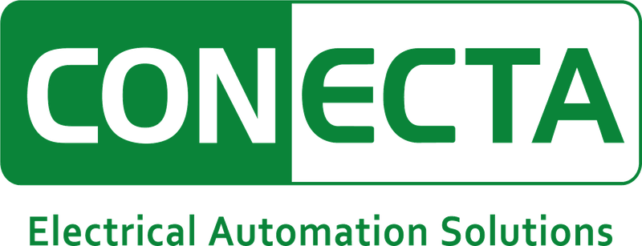
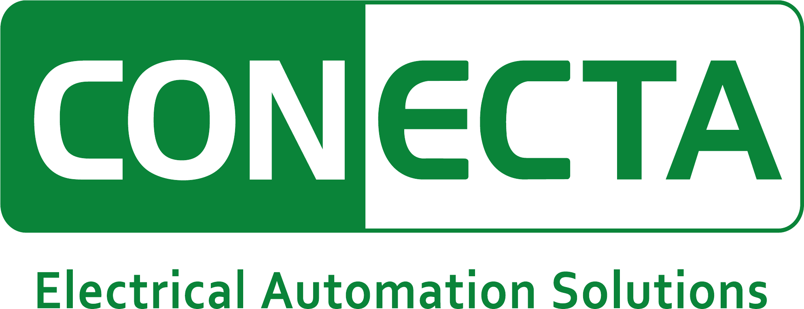

Son la primera decisión de carrera. Y no la define el primer sueldo.
La pregunta no es qué hay hoy. Es dónde estará el trabajo que siga existiendo en 2046.
Plantas, moliendas, fundiciones, relaves, puertos, líneas eléctricas.
Un DCS, protecciones, instrumentación, una subestación y un equipo que lo ponga en marcha.
El dato estaba en un tablero y en un papel. Se decidía con lo que se veía.
Hay miles de señales por planta que nadie ocupa. Decide el que sabe qué preguntar.
La red, la subestación y la protección. El sistema eléctrico.
El interior de la planta. El proceso industrial.
El ingeniero que sabe demostrarle al Coordinador que la planta cumple.
El ingeniero que entiende al cliente y sabe qué venderle.
Con el ruido, el polvo y el turno de noche.
Con el plano en la mano y el equipo energizado.
Cuando algo falla y hay que resolverlo ahora.
Hay un organigrama y un lugar reservado.
El organigrama se escribe con los que llegan.
Dice que alguien sabe memorizar.
Que le importe hacer bien las cosas, que pregunte cuando no entiende y que se haga cargo.
Cuando algo sale mal, la primera frase no es 'fue el otro'.
'No lo sé, lo averiguo y te aviso' vale más que una respuesta inventada.
Si dijiste a las 8, a las 7:50 estás. El liderazgo es que tu palabra valga.
Anotar el dato que te pidieron aunque nadie te esté mirando.
Elegimos la tecnología.
Calculamos e ingenierizamos.
Ponemos el equipo en terreno.
Y respondemos por el resultado.